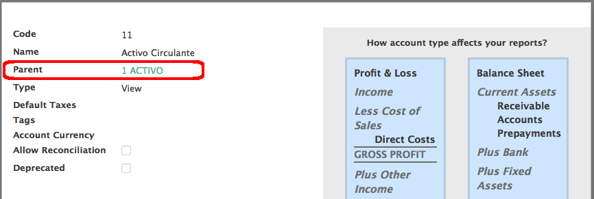
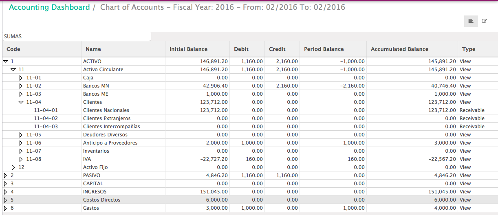
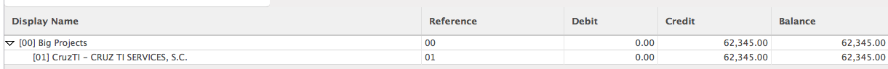

Account Parent / Children Tree Structure
Account Parent / Children Tree Structure
This module adds some customization to Accounts Catalog and Analytics Accounts Catalog.
Also, adds Extended Chart of Accounts for Monthly Balance to analyze accounts. This is also for Analytics Accounts.
Added Parent Account field to be able to make Tree Account structure. This is required for Mexican legislation,
it's not only for reporting purposes.

Parent AccountThis goes for Analytic Accounts too.
 Parent Analytic Account
Parent Analytic Account
We can get Extended Chart of Accounts

Extended Chart of AccountsWe can get Extended Chart of Analytics Accounts

Extended Chart of AccountsThis module is required for other modules.